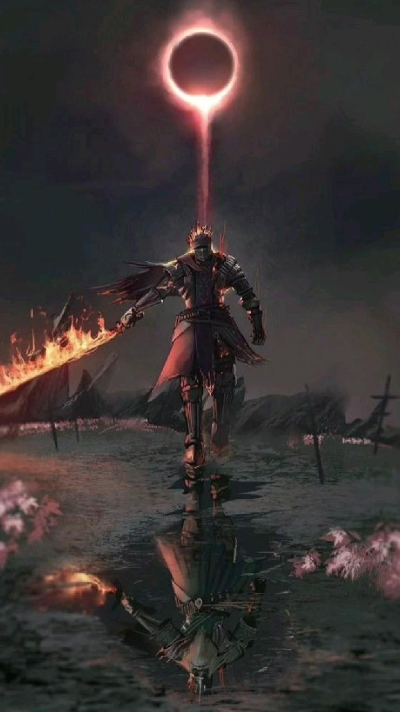
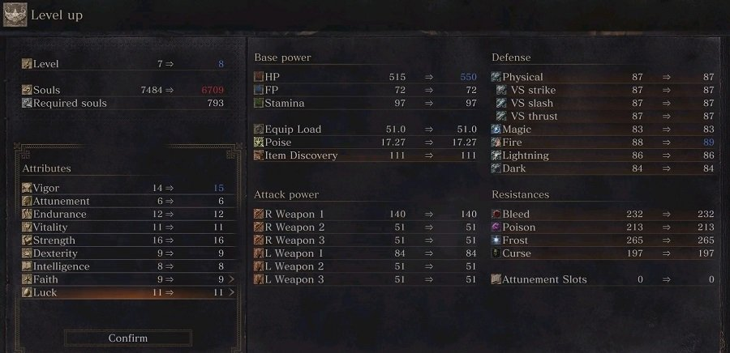
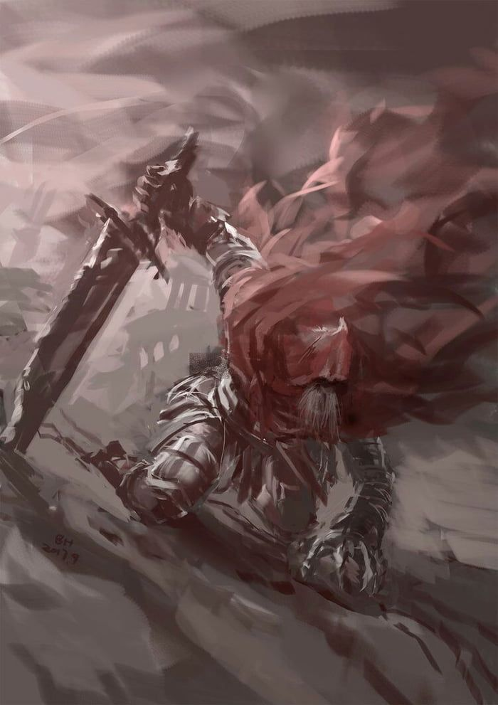

Contenido del Juego
Historia
Dark Souls 3 es el final de la saga y presenta un mundo, el Reino de Lothric, al borde del Apocalipsis por culpa de "la maldición de los no muertos", y la razón por la que el mundo aún no se ha sumido en la oscuridad totalmente es el sacrificio que muchos héroes e incluso dioses hicieron al reavivar la llama original, la cual se encarga de mantener la "Era del fuego", dejando que esta consumiera sus respectivas almas y cuerpos.
El personaje principal al que se da vida en este título, es uno de los que llaman "Latentes"; estas personas son humanos que consiguieron llegar al horno de la Primera Llama, trataron de enlazarla, pero fueron consumidos y hechos ceniza sin conseguir su objetivo. Estos humanos son despertados cuando los Señores de la Ceniza (aquellos que sí que fueron suficientemente poderosos como para enlazar la Primera Llama) son despertados pero no cumplen su deber: quedarse en sus tronos (en el Santuario de Enlace del Fuego) hasta que se les vuelva a sacrificar para enlazar la Primera Llama. Es decir, cuando los Señores de la Ceniza no quieren volver a prolongar la Era de los Dioses (la era del fuego) y abandonan sus tronos, los Latentes deben ir a por ellos para matarlos y devolver sus cenizas a los Tronos, y el Latente que lo consiga, deberá, como última parte del plan, inmolarse él mismo, y convertirse de esta forma, en un Señor de la Ceniza.
Los señores de las cenizas
- Vigilantes del Abismos: seguidores del legado de Artorias, uno de los caballeros del primer señor de las cenizas, Gwin. Estos son un colectivo los cuales juntos intentaron enlazar la llama original en lo cual fallaron y cayeron en la locura, condenados a la locura y a luchar entre ellos hasta el fin de sus días.
- Aldrich, el Santo de la Oscuridad: Este terrible ser comenzó siendo un simple clérigo de la Catedral de la Oscuridad. desarrolló un enfermizo gusto por la carne humana, llegando a devorar incluso a un Dios, Gwyndolin, que estaba en Anor Londo. A este caníbal le hicieron Señor de la Ceniza por poder y no por virtud.
- Yhorm el gigante: Este era un descendiente de un conquistador que amaba a su pueblo, pero este no lo correspondía; debido a esta situación, Yhorm decidió hacer dos cosas: la primera, fue entregar dos espadas, llamadas "Soberano de las Tormentas", una a su pueblo, y la otra a su gran amigo Sigward, de los caballeros de Catarina. Hizo estos regalos porque estas espadas son su punto débil. La otra cosa que hizo, fue intentar acabar con la Llama Profanada, una peligrosa llama que algunos creen que es una sustitución del lecho del caos (de Dark Souls I). Para cumplir esta tarea, enlazó la Primera Llama. Sin embargo, las consecuencias fueron terribles: lejos de apagarse, la Llama Profanada cobró tal fuerza, que arrasó la Capital Profanada. No quemó sino carne humana. Sólo unos pocos sobrevivieron, y estos fueron más tarde los carceleros de la Mazmorra de Irithyll.
- Lorian y Lothric: Lorian es el mayor de los hermanos. Antes de que naciera Lothric, servía como caballero para el Reino. Llegó, incluso, a derrotar al Príncipe Demonio, y por ello su espada está envuelta por llamas. Cuando nació su hermano pequeño, este resultó ser deforme y enfermizo; estos defectos son explicados porque sus padres, el Rey Oceiros y la Reina, recurrieron a medios infames para conseguir al heredero perfecto para enlazar la Primera Llama. Lorian decidió compartir la maldición de su hermano, de tal forma que sus almas están conectadas; y Lorian, por compartir esta carga, se quedó mudo e inválido. Estos príncipes no querían enlazar la Primera Llama porque el Primer Erudito, que era su tutor particular, les convenció de que el legado de los Señores de la Ceniza, el Enlace del Fuego, no era una buena opción.
- Ludleth, el Exiliado: Este es el único Señor de la Ceniza que no ha abandonado su trono. Este hombre era un Rey que descuidó sus tierras para dedicarse al estudio de la Transposición de Almas, un arte prohibido en su Reino, Courland.
Final
Cuando se reúnan las cenizas de todos los Señores de la Ceniza, hay que realizar el ritual de enlace del fuego, con la ayuda de la Guardiana del Fuego, e ir al horno de la Primera Llama. Allí, hay que enfrentarse con el Alma de Ceniza, este casi al final de la pelea recordará mucho a Gwyn, el más poderoso de los Dioses, el primero que dio su vida y su alma para reavivar la Primera Llama, miles de años atrás, aquel con el que toda la historia de Dark Souls, pasando por Lordran, Drangleic y Lothric, comenzó...
Y cuando el Alma de Ceniza sea derrotado, se tendrá la más importante de todas las decisiones: enlazar la Primera Llama, extendiendo así la Era del Fuego; dejar que se apague, comenzando así la Era de la Oscuridad; robar el poder de la Primera Llama, comenzando la Era de la Oscuridad, pero conservando en el personaje elegido el poder de la Primera Llama; o robar el poder de la Primera Llama, pero en vez de sencillamente quedárselo, se puede convertir en el Señor de la Era de la Oscuridad.
Gameplay
Dark Souls 3 tiene mecánicas muy similares a sus predecesores, al iniciar partida puedes elegir diferentes clases, las cual única diferencia son los objetos iniciales y las estadísticas. Una vez seleccionada una clase empieza la partida, en este juego hay armas, escudos, armaduras, hechizos y objetos, siendo uno de los más importantes el Estus Flask, este es una poción la cual se puede mejorar a lo largo de la partida, y cura al jugador.
Las hogueras son unas de las mecánicas más importantes de juego, cuando encuentres una podrás sentarte a su alrededor, aquí aparecerá un menú el cual permite el desplazo instantáneo entre las hogueras las cuales el jugador haya encontrado. También permite cambiar los hechizos equipados y entrar a la caja sin fondo, un menu el cual permite guardar objetos si ningún tipo de límite. Una de las ventajas más grandes de estas es que restauran la salud del jugador por completo, su mana y la cantidad de veces que puede usar el estus flask, pero a su misma vez hace que todos los enemigos vuelvan a aparecer.
Al derrotar enemigos estos otorgarán al jugador almas, esta es la moneda de cambio la cual permite al jugador comprar objetos y mejorar sus armas, en este no es posible mejorar las armaduras lo cual puede ser una ventaja o desventaja dependiendo a quien le preguntes. Con suficientes almas puedes ir al Santuario de Enlace de Fuego, ahí podrás hablar con la guardiana de fuego, este dejará al jugador aumentar su nivel y las estadísticas elegidas a cambio de almas.
DLC
Cenizas de Ariandel
Este es el primer contenido descargable, para poder acceder a este tienes que ir a la entrada de la Catedral de lo Profundo, ahí encontraras a Gael, este te pedirá ayuda y te dará un trozo de una pintura, cuando el protagonista intente tomarla esta lo absorberá y lo enviara al mundo pintado de Ariandel, esta ya ha sido explorado Dark Souls 1, pero esta vez será una zona diferente, aquí podrás encontrar a la Hermana Fride.
En esta nueva zona podrás encontrar armas, armaduras, hechizos y jefes nuevos. También podrás conseguir una alta cantidad de objetos de mejoras y nuevos retos para aumentar el tiempo de juego y el contenido jugable.
La Ciudad Anillada
Seguido de Cenizas de Ariandel, este es el segundo y ultimo contenido descargable, se puede acceder tras haber completado el DLC anterior o en la zona final del juego, este nos enviará a los alrededores del horno de la primera llama, una zona caotica, ya que ha sido afectada por los repetidos intentos de avivarla, esta crea estragos a su alrededor sea un intento fallido o exitoso, al avanzar encontraras mensajes de Gael, que nos eseñará por donde tenemos que ir.
Al final de la zona encontrar una zona de salto, aquí habrás firmas de invocación, una de Gael, el cual ha estado esperándonos y otra de Lapp, en guerrero el cual ha perdido la memoria. Al saltar despertaran 2 demonios, estos son los que pelearon con el príncipe Lorian, una vez vencido los 2, el último tomara los poderes el primero que cayo y se convertirá en el Príncipe Demonio, y este será el último demonio de todo Dark Souls.
Al vencer a los demonios podremos acceder a la Ciudad Anillada, aquí Gwin encerró a una de sus hijas, iremos avanzando por esta ciudad encontrado todo tipo de mejoras y enemigos, al llegar al final encontraremos ala hija de Gwin, la cual está abrazando un huevo gigante, que al jugador tocar se romperá y desatara un hechizo que hará que avance el tiempo, al acabar el hechizo todo será cenizas, y aquí encontraremos a Gael, el cual se ha deformado buscando un pigmento, un trozo del Alma Oscura para su señora en Ariandel, aquí lucharemos contra él así teniendo la última batalla que concluirá esta saga.
y aquí puedes descargar el zip